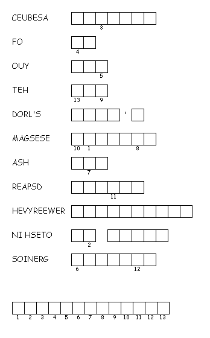

This week's lessons: Exodus 33:12-23 and Psalm 99 or Isaiah 45:1-7 and Psalm 96:1-9, (10-13), 1 Thessalonians 1:1-10 , Matthew 22:15-22
Elementary School Pew-work
T
H E S S A L O N I A N S
|
(1 Thessalonians 1:2-3 NRSV) We always give thanks to God for all of you and mention you in our prayers, constantly {3} remembering before our God and Father your work of faith and labor of love and steadfastness of hope in our Lord Jesus Christ. |
Word List |
from http://www.efree.mb.ca/lectionarypuzzles free to distribute for free with this notice. Words are in a straight line left to right or top to bottom |
||
|
1. What did the
Pharisees tell Jesus that he
taught?
2. What did Jesus
ask to
see?
3. Whose picture
was on the
coin?
4. What did Jesus
say?
5. What did the
Pharisees
do? Questions taken from Sunday School Lessons; http://www.sundayschoollessons.com/baplord.htm |
Created by Puzzlemaker at DiscoverySchool.com |
Next week: Deuteronomy 34:1-12 and Psalm 90:1-6, 13-17 or Leviticus 19:1-2, 15-18 and Psalm 1, 1 Thessalonians 2:1-8 , Matthew 22:34-46
This week's lessons: Exodus 33:12-23 and Psalm 99 or Isaiah 45:1-7 and Psalm 96:1-9, (10-13), 1 Thessalonians 1:1-10 , Matthew 22:15-22
Middle-School Pew-work
When do you get discouraged? ____________________________________________________ ____________________________________________________________________________________________________________________________________________________________________________________________________________________________________________________________________________________________________________________________________________________________
Whom do you turn to for encouragement? ____________________________________________________ ____________________________________________________________________________________________________________________________________________________________________________________________________________________________________________________________________________________________________________________________________________________________
Do you notice when your friends are discouraged, and how do you encourage them? ____________________________________________________ ____________________________________________________________________________________________________________________________________________________________________________________________________________________________________________________________________________________________________________________________________________________________
|
|
1:1 Paul, Silvanus, and Timothy, To the church of the Thessalonians in God the Father and the Lord Jesus Christ: Grace to you and peace. 1:2 We always give thanks to God for all of you and mention you in our prayers, constantly 1:3 remembering before our God and Father your work of faith and labor of love and steadfastness of hope in our Lord Jesus Christ. 1:4 For we know, brothers and sisters beloved by God, that he has chosen you, 1:5 because our message of the gospel came to you not in word only, but also in power and in the Holy Spirit and with full conviction; just as you know what kind of persons we proved to be among you for your sake. 1:6 And you became imitators of us and of the Lord, for in spite of persecution you received the word with joy inspired by the Holy Spirit, 1:7 so that you became an example to all the believers in Macedonia and Achaia. 1:8 For the word of the Lord has sounded forth from you not only in Macedonia and Achaia, but in every place your faith in God has become known, so that we have no need to speak about it. 1:9 For the people of those regions report about us what kind of welcome we had among you, and how you turned to God from idols, to serve a living and true God, 1:10 and to wait for his Son from heaven, whom he raised from the dead--Jesus, who rescues us from the wrath that is coming. |
Next week: Deuteronomy 34:1-12 and Psalm 90:1-6, 13-17 or Leviticus 19:1-2, 15-18 and Psalm 1, 1 Thessalonians 2:1-8 , Matthew 22:34-46